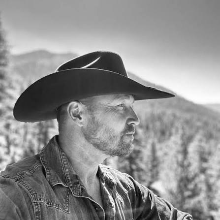
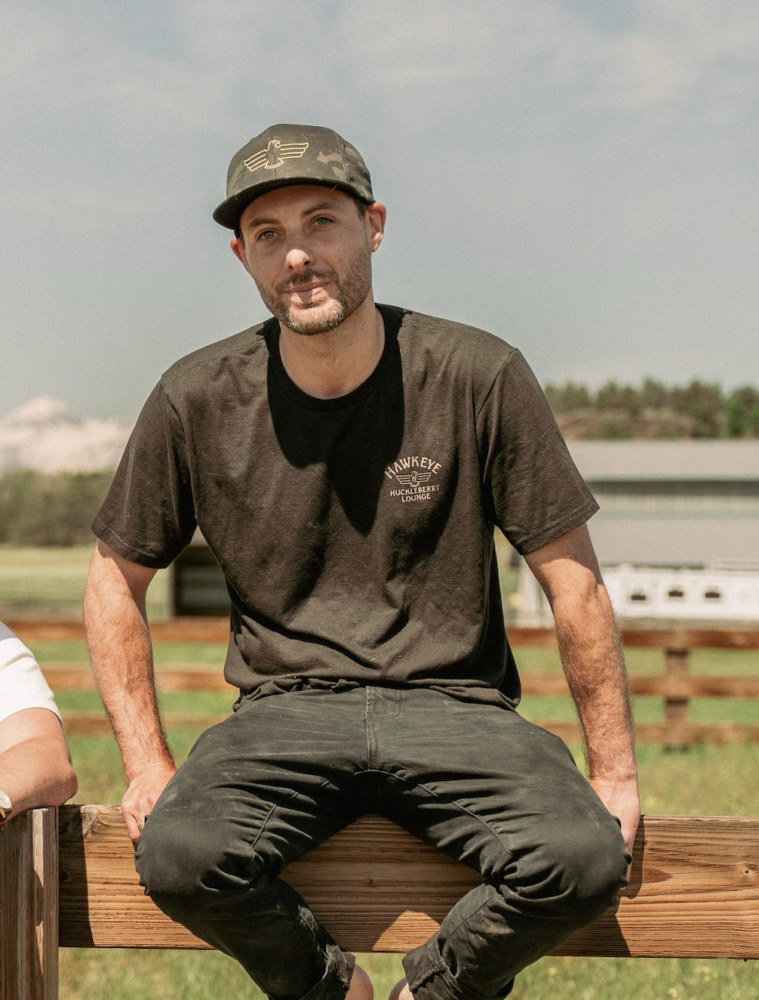

Before he was a celebrity chef, restauranteur, or rancher, Brian Malarkey was a boy from the country in Oregon. James, his brother, has the same story — Oregon roots, a love of the open spaces of Central Oregon, and a feeling that he'd find his way back to it eventually.
Brian's career carried him out of state — through television kitchens, acclaimed restaurants, the demanding orbit of a professional chef. James built a life as an entrepreneur and marketer. Both successful. Both still pulled, quietly and persistently, by the place that raised them.
After biding their time for years, the brothers found the right opportunity to do something amazing — and make themselves part of the fabric of a place they love.
That opportunity is Hawkeye & Huckleberry Lounge — a "modern cowboy" restaurant and bar with a wood-fired oven, semi-private canvas tent dining, and a vibrant outdoor patio that perfectly embodies Oregon's majestic outdoors. The menu, deeply rooted in ranch-to-plate traditions, showcases beef and produce from our nearby Tumalo ranch. With an on-site butcher shop and smoker, we make use of the entire animal, offering high-quality steaks, creative dishes, and plenty of options at friendly prices.
This is a dining experience that celebrates the culinary heritage of Central Oregon — and a love letter to the home the Malarkey brothers spent decades trying to find their way back to.
The people behind Hawk & Huck.

Brian Malarkey
Chef & Co-FounderCelebrity chef, restaurateur, and rancher. Brian's name has lived on TV kitchens and acclaimed restaurant marquees — a Top Chef finalist and Food Network mainstay who has opened more than 20 restaurants across the country. At Hawk & Huck he's home, building the menu around the beef his family raises in Tumalo and the wood-fired traditions he's refined for decades.

James Malarkey
Co-FounderBrian's brother and an entrepreneur with a deep love of the Oregon outdoors. James handles the business of running Hawk & Huck — operations, partnerships, and making sure the experience guests have is the one the brothers set out to build. Oregon-raised, and finally home.

Carlos Anthony Ochoa
Executive Chef & PartnerCarlos Anthony Ochoa is an award-winning chef, television personality, and partner at Hawkeye & Huckleberry Lounge in Bend, Oregon. A longtime creative partner of Brian Malarkey, Carlos has helped open 13 acclaimed restaurants across the country, including the celebrated Herb & Wood in San Diego, which earned six consecutive years of Michelin recognition during his tenure.
Recognized as San Diego Reader's Best Chef in 2023, Carlos has appeared on numerous Food Network programs including Tournament of Champions, Beat Bobby Flay, Guy's Grocery Games, Chopped Next Gen, and Cutthroat Kitchen, while also serving as a judge on Supermarket Stakeout.
Beyond the kitchen, Carlos is passionate about sustainable agriculture, food education, and community impact. His work with nonprofits, school garden programs, and local food systems reflects his belief that great food should connect people to the land and to each other.
As Executive Chef and Partner, Carlos leads the culinary vision at Hawk & Huck, bringing a ranch-to-plate philosophy to life through ingredients sourced from the nearby P-B Hawkeye Ranch and throughout Central Oregon.

Jayme Hardbeck
General Manager & PartnerJayme Hardbeck has been a trusted member of the Brian Malarkey restaurant group since 2010, helping open and operate more than 17 restaurants across the country. From concept development and openings to day-to-day operations, his career has been built on creating memorable guest experiences and leading high-performing teams.
As General Manager and Partner of Hawk & Huck, Jayme oversees every aspect of the restaurant's operation, ensuring that hospitality, service, and attention to detail remain at the heart of everything we do. His leadership has helped establish Hawk & Huck as one of Bend's most distinctive dining destinations.
Known for his calm presence, operational expertise, and commitment to excellence, Jayme has spent more than a decade helping bring successful restaurant concepts to life. When he's not at the restaurant, you'll most likely find him on an Oregon river with a fly rod in hand, chasing the next great catch.